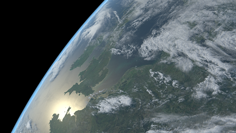
在本教程中，我们将分步骤介绍如何只使用着色器来制作一个逼真的地球和云。我们将使用一个体积和一个 standard_volume 着色器来向地平线添加一些大气。我们还将使用连接到 skydome_light 的 physical_sky 为场景照明。此场景对于科幻题材的电影（例如有关宇航员发生不幸的电影）来说是一个理想的背景。非常感谢 MPC 的 Will MacNeil 提供本教程中使用的场景。
您需要下载这些高分辨率纹理与此场景一起使用。请记住，在渲染之前将纹理转化为 .tx 格式。
| 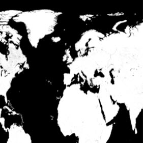 | 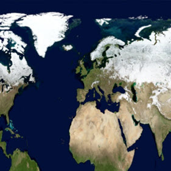 | 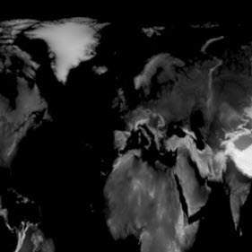 | 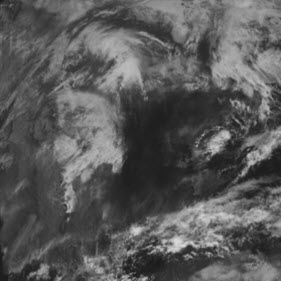 |
| Earth Mask（镜面反射） | Earth Color（漫反射） | Earth Elevation（置换） | 云（自发光、不透明度、置换） |
要下载最终场景文件，请单击此处。
本教程分为以下阶段：
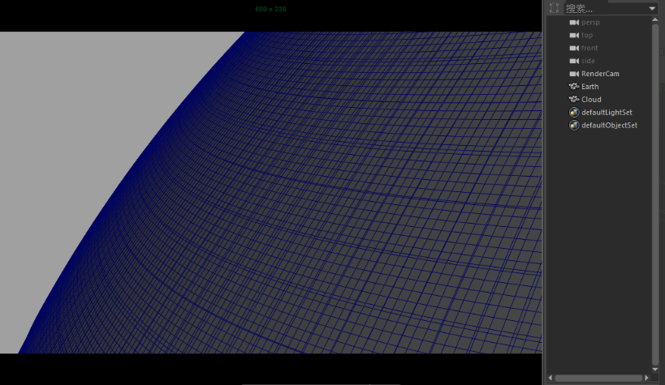
包含地球和云对象的起始场景
暂时先将云对象隐藏起来。我们先重点了解地球着色器。
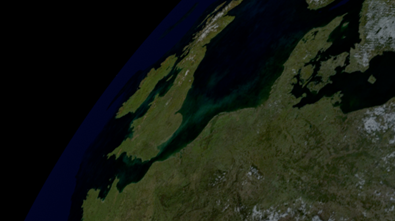
“Earth Color”贴图连接到地球 standard_surface 着色器的基础颜色
现在，我们要添加一个镜面反射贴图，以确定海面上发生反射的位置和地面上没有镜面反射度的位置。
地面/海面的闪光程度取决于连接到地球着色器的镜面反射度的“Earth Mask”纹理
现在，地球表面看起来有些平坦。我们可以向地表添加一些高海拔区域，方法是使用置换贴图 -“Earth Elevation”。
创建文件纹理，并将其连接到地球标准着色器的着色组的“置换”(Displacement)属性。打开纹理 Earth Elevation。要想在置换中看到精细的细节，我们需要为地球几何体添加一些细分。
选择地球几何体。在 Arnold 的“细分”(Subdivision)选项卡下，将“类型”(Type)更改为“Catclark”，并将“迭代次数”(Iterations)增加到 4。
| 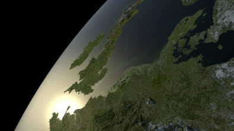 | 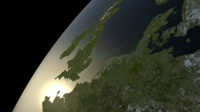 |
地球的地形使用“Earth Elevation”纹理进行置换
地球表面的最终着色器网络应类似下图：
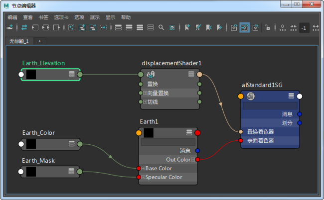
最终地球着色器网络
云着色器的设置稍微简单一些。我们将使用云图像，并将它连接到一个 standard_surface 着色器的“自发光”(Emission)、“不透明度”(Opacity)和“置换”(Displacement)属性。
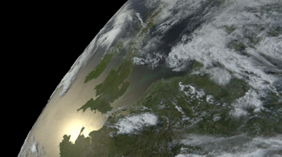
云的“置换”(Displacement)、“不透明度”(Opacity)和“自发光”(Emission)由云纹理贴图驱动
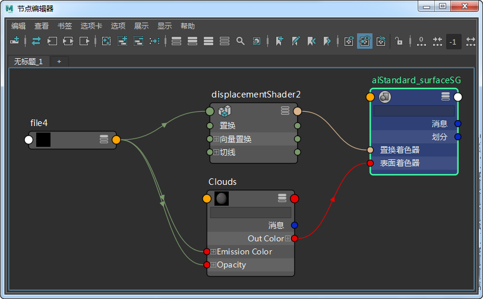
最终的云着色器网络
最后，我们将使用体积创建一些在地平线上可见的大气。
创建球体。将其缩放，使其覆盖地球对象。
在 Arnold 属性中将 step_size 增加到 0.1。
创建一个 standard_volume 着色器，并将它指定给球体。球体现在应渲染为体积。
将 scatter_color 更改为浅蓝色。增加 transparent_depth 以微调效果。您还可以在此添加 facing_ratio 着色器来为大气提供逼真的衰减。
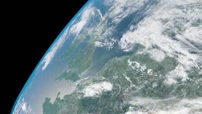
有关如何为地球进行逼真着色的教程到此结束。最后，何不尝试一下为云和地球的旋转设置关键帧，创造出假的延时效果或用动画表现宇航员跌落太空的情形？